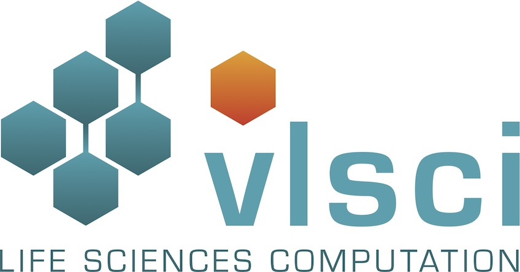

| Computational Methods |
Established methods for computational phylogenetics were employed. We used MUSCLE and MAFFT for generating alignments, tree construction was performed using FastTree and conversion to PhyloXML and decoration with key data was performed using the Konstanz Information Miner with the Forester library integrated into the KNIME PlantCell extension. Visualization of trees was performed using Archaeopteryx.
The huge collective effort of the authors for the above software packages is wonderful and it has been a delight to use these projects. Demanding, but delightful none-the-less. A huge thankyou to all of you who make larger-scale work possible in a timely fashion.
Raw data was provided to the consortium members around March 2013. By June 2013, a complete dataset had been downloaded and computational methods established. At this time, contanimants and other problems with some samples had not yet been identified. However, due to the sheer size of the data, we analysed this data and computed the trees: including, what would later become, likely contaminants. The reader is cautioned that some hits will be the result of contaminants and not a true phylogenetic relationship.
The protein translations provided by the 1kp consortium were initially used to construct trees. However, for some HRGP family members, k=25 used to construct the assemblies limited the amount of some family members recovered due to perfect nucleotide repeats which a De Bruijn graph transcriptome assembler can correctly reconstruct from sequence reads. So we increased this to k=59 to ensure correct reassembly, albeit at the expense of transcript recovery rate and total transcript length. This involved reassembly of each sample using oases.
In some cases, due to extensive proline-rich repeat regions, accurate phylogenetic reconstruction is difficult. The reader is cautioned to treat these phylogenetic trees as a hypothesis rather than conclusive proof.
|  |